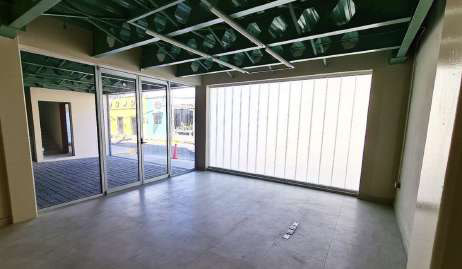
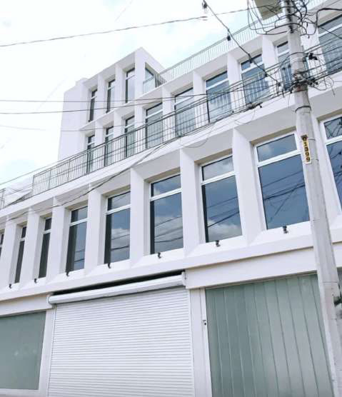
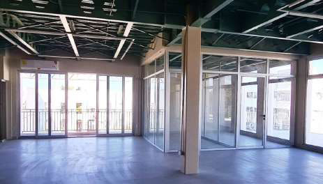
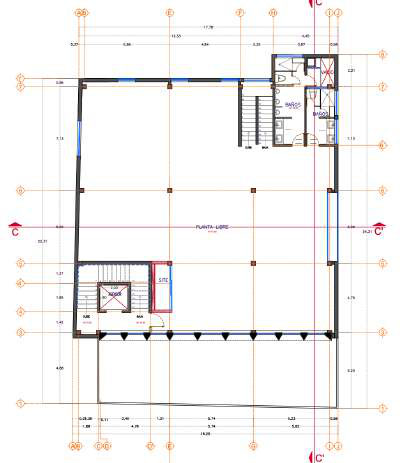
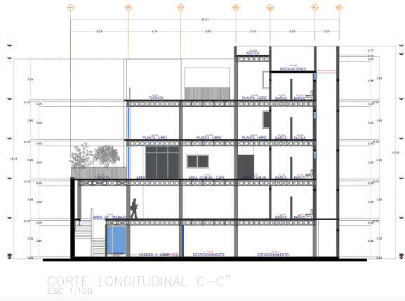

Office building in the historical centre of Culiacán, Sinaloa, 2021. A five-story modern building that mimics the classical order of colonial architecture, with the volume set back to comply with heritage-zone regulations.

A five-story modern building that mimics the classical order of colonial architecture.
The volume is set back to comply with heritage-zone regulations.
D1AS stands in the historical centre of Culiacán, Sinaloa. It is a five-story modern office building that mimics the classical order of colonial architecture.
The volume is set back to comply with heritage-zone regulations.



